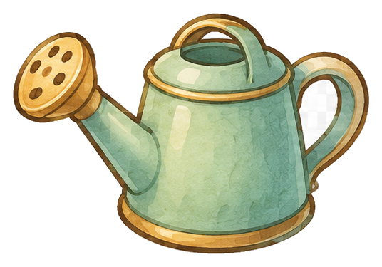
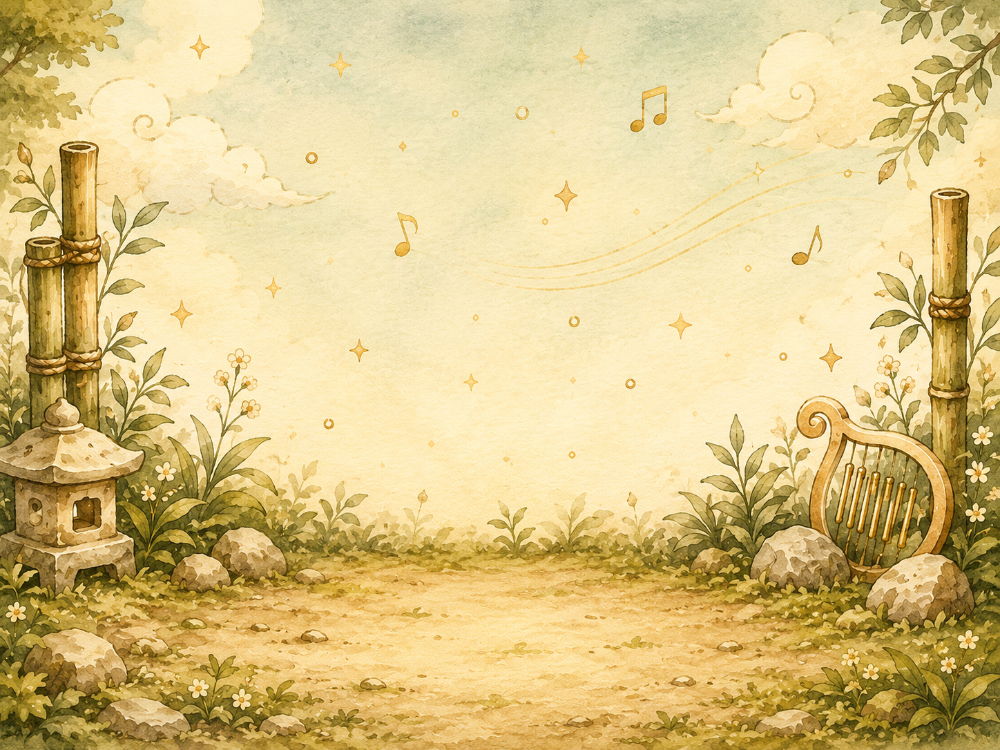

保持身體放鬆，用穩定氣流吹奏，不要用蠻力把音推出去。
半音階口琴練習室
透過音符地圖與基礎練習，建立穩定的基本功，讓每一次吹奏都更扎實、更動聽。
快速入口
調音
全音域調音器
吹奏時會顯示最接近的音名與 cents 誤差。
全音域調音器
等待收音
--
等待收音
吹奏時會顯示最接近的音名與 cents 誤差。
練習室入口
開始練習
選擇今天想練的項目，從長音開始慢慢累積基本功。
已開放
長音練習室
練習穩定氣息、音準觀察與音量控制。
按鍵練習室
熟悉按鍵音與半音切換。
音階練習室
練習音階流暢度與指法方向感。
節奏練習室
搭配節拍器練習節奏穩定與跳位。
旋律練習室
用短句旋律練習音準、換氣與表情。
合奏練習室
練習聲部進入、聽感與合奏默契。
音符地圖
音符地圖
切換琴型後左右滑動，逐孔查看吹音、吸音與按鍵音。
認識半音階口琴
半音階口琴有吹音、吸音，也有側邊按鍵讓音升高半音。先建立音位方向感，再進入長音練習。
吹音 / 吸音
側邊按鍵
音位方向感
常見配置，實際音位仍以你的琴款標示為準。
第一課
長音練習室
8 拍平穩長音
初階
8 拍平穩長音
狀態：待開始
0 / 8 拍
1 / 4 次
60 BPM
練習目標
平穩長音
自然起音，平穩延伸，輕柔收尾。
音準觀察
低
高
等待
等待穩定收音
每日練習
每日目標
完整完成一個練習後會自動打勾，每天重新開始。
連續學習
0 天
今天完成第一次有效練習，就能延續你的紀錄。
今日完成 0 / 18 個練習
今天也比昨天更進一步
一二三四五六日

植物精靈
精靈花園
完成各種練習室的練習獲得水滴，澆灌屬於你的植物精靈。
目前植物
旋律芽芽
幼苗0 滴

階段進度0 / 20
還需要 20 滴水進入下一階段。
收藏冊
植物精靈圖鑑
採收成熟植物精靈後，可在圖鑑中選一株放到首頁展示。
設定
設定
整理收音、練習、聲音與顯示偏好。
收音設定
麥克風與校正
麥克風狀態
待開啟
靜音校正
建議戴耳機，避免節拍器影響收音。
練習設定
練習設定
預設循環次數
聲音設定
聲音設定
顯示與動畫
顯示與動畫
通知與語言
通知與語言
練習提醒
準備中
語言
繁體中文
會員帳號
會員帳號
登入後可同步練習資料與精靈花園進度。
關於
關於
Chromatic Harmonica Lab
目前版本：refresh-46
問題回報
準備中